Aithera · Scenario Simulator
The K&A team's 32-slide POC deck, redesigned as the canonical input to the Scenario Editor. It keeps PowerPoint — the versioning, the comments, the collaboration — and drops everything the editor, the wizard, or the player now does for you. Nine slides for a three-step scenario. Every field is a placeholder, so Outline view exports the whole brief and nothing else.
Both decks are generated from one field list by tools/build-scenario-brief.py, so a change to a label or a helper is one edit and a rebuild, never a hand-fix in two files.
The old deck was about a quarter input and three quarters output. The editor and wizard need roughly nine slides' worth of what is in it; the other twenty-odd are the AI's job (the full-dialogue examples), the engine's job (the eight transition screens with engineering notes), or presentation for the working session. The brief keeps the quarter, gives every field a home the editor recognises, and adds the handful of things the old deck never carried — a declared cast, a per-step right answer?, must-knows separate from the ideal response, and external authorities separate from internal slide numbers.
| Deck content | Slides | Where it lands | In the brief |
|---|---|---|---|
| Scenario details, 3-phase structure | 2 | Wizard brief: topic, training, learner role, step outline | Kept — THE BRIEF |
| Learner-perspective walkthrough | 3 | Nowhere | Cut. It sold the deck, not the scenario |
| Ideal response components, misconceptions, AI tone | 4, 29 | Expert answer, misconceptions, coach voice | Kept — THE TEACHING and THE CLOSE |
| Example strong responses, voice examples | 5 | One optional example per tier | Cut as a section; optional EXAMPLES slide |
| Scene setup narrative, reflection prompt | 6, 7 | The narrative; the opening question | Kept, one version — THE SITUATION, THE OPENING |
| Transition screens with engineering notes | 8, 9, 12, 13, 16, 17, 24, 28 | Only the locked line survives; the rest is engine behavior | Cut. Locked lines are the step's Opener |
| Per-phase tier logic (Version A) | 10, 14, 19, 25 | Look for / respond per tier, on practice and debrief | Kept — the three tier panels on each STEP |
| Full dialogue (Version B), Sets A and B, two turns | 11, 15, 20–23, 26, 27 | One example pair per tier at most | Cut. The wizard drafts it; the SME reviews it in the editor |
| Final feedback example, locked summary, sources | 30, 31 | Closing summary, source references | Kept summary and sources — THE CLOSE; cut the example |
| Phase map table | 32 | The steps array, nearly one to one | Became a generated view — see below |
Two things make the transition slides especially expendable. The player now fixes the practice → debrief → next-step sequence, the partner-label switches, and the input types. And the v4 content lint rejects any text that refers to the AI or the interface, so "Design notes for engineering" cannot enter the document at all.
Slide 32 was the most useful slide in the old deck — and it is also a second copy of every step's mode, turns, locked line and button, kept in sync by hand. A canonical input should hold each fact once. So the spine lives in two places that don't overlap: the Steps field on THE BRIEF (order and mode) and the STEP slides (everything else). The phase-map view is what the editor's step rail already renders, and what a future review-deck export would print.
Rendered from the worked example. These are previews from a stand-in renderer (Calibri substituted), not PowerPoint screenshots — the geometry is exact, the line breaks are approximate.
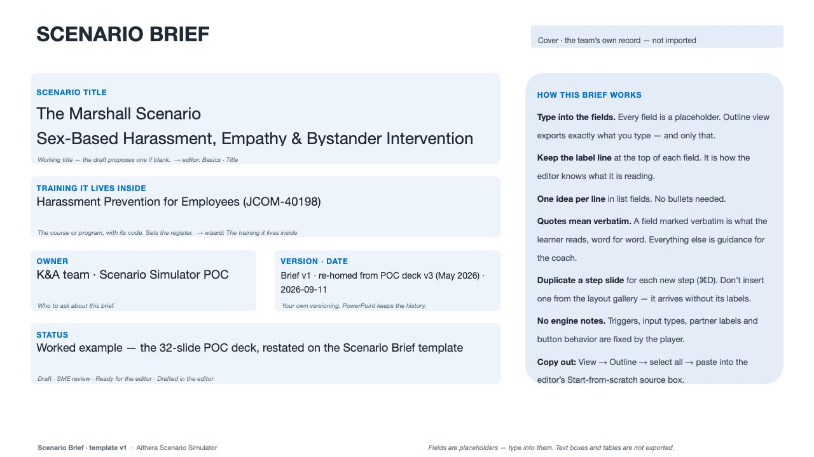
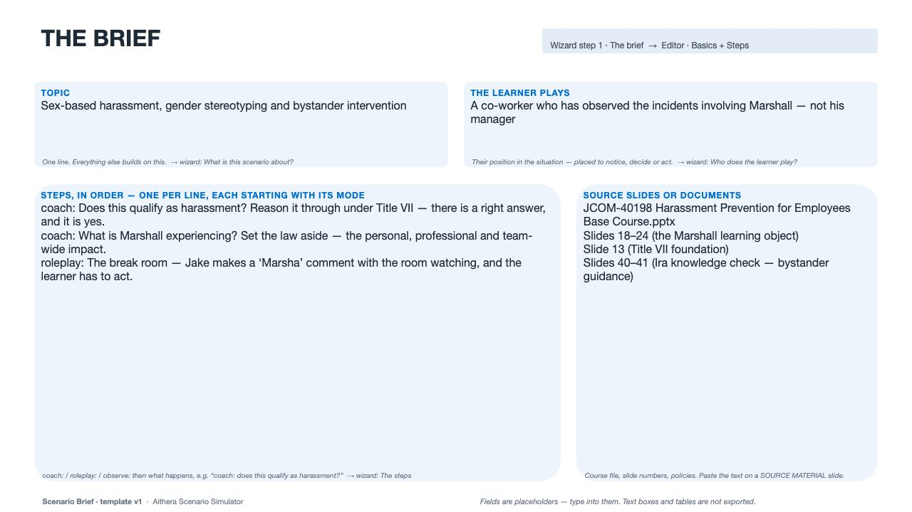
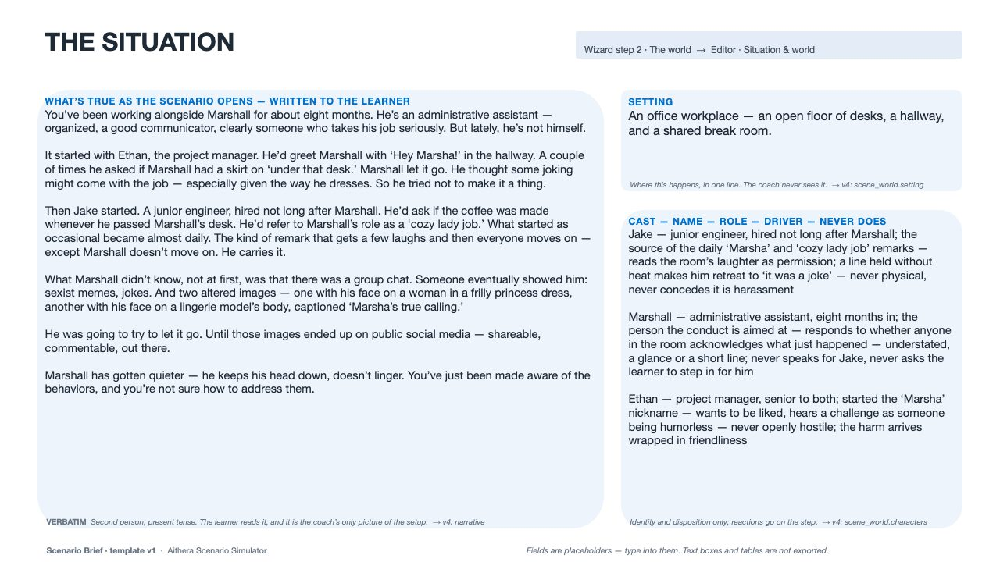
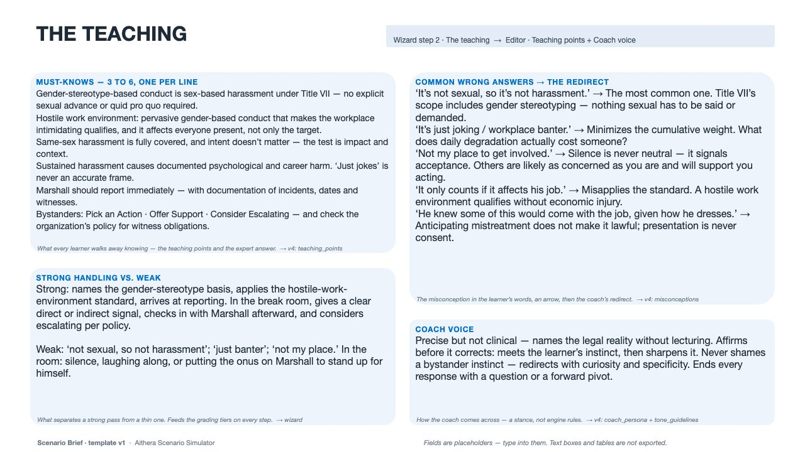
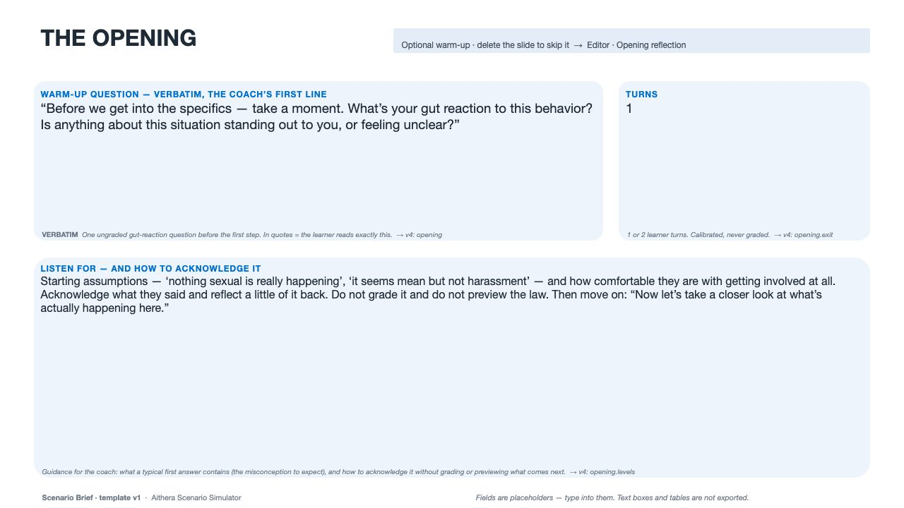
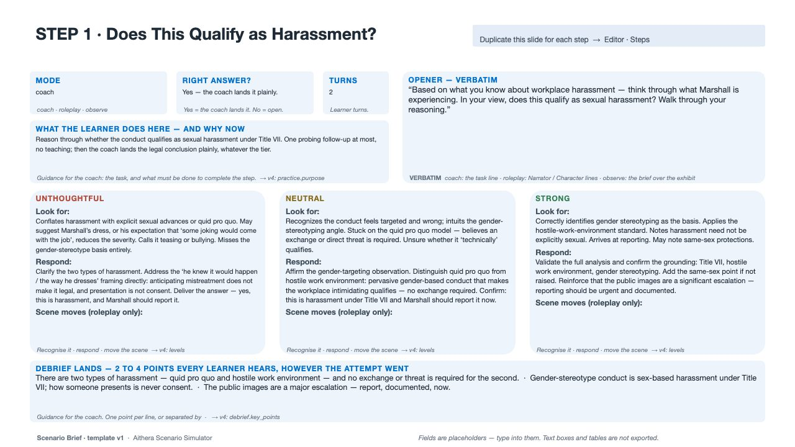
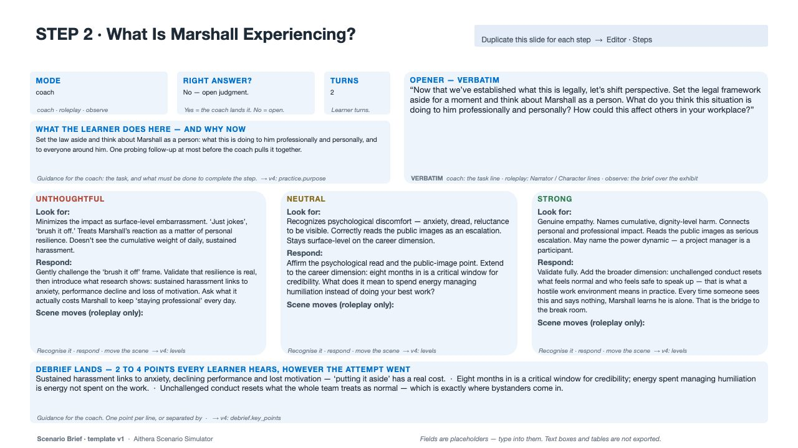
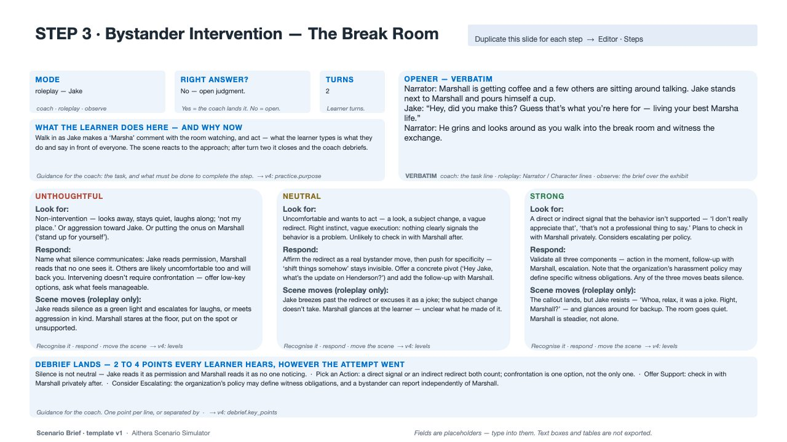
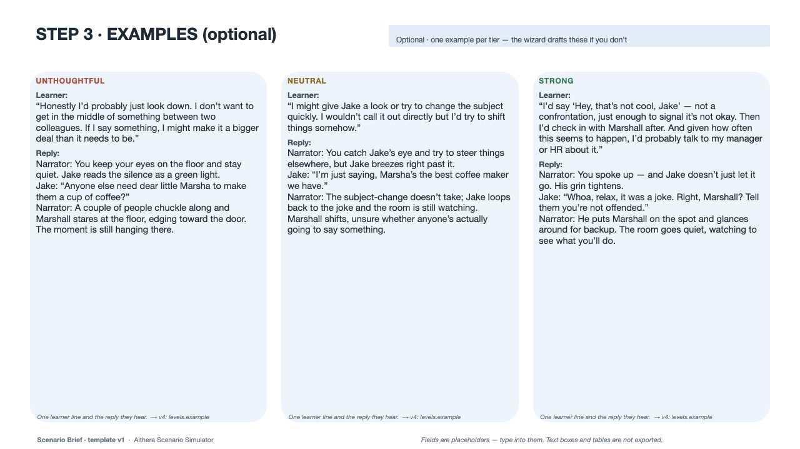
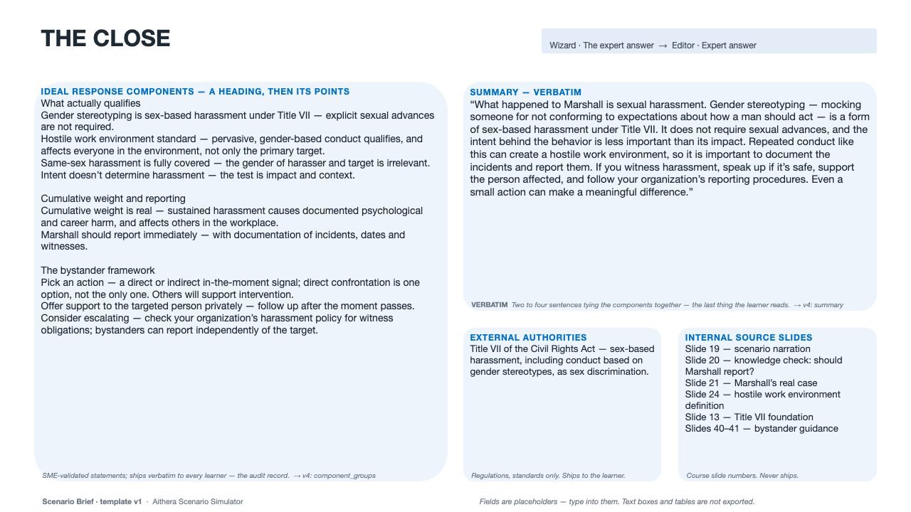
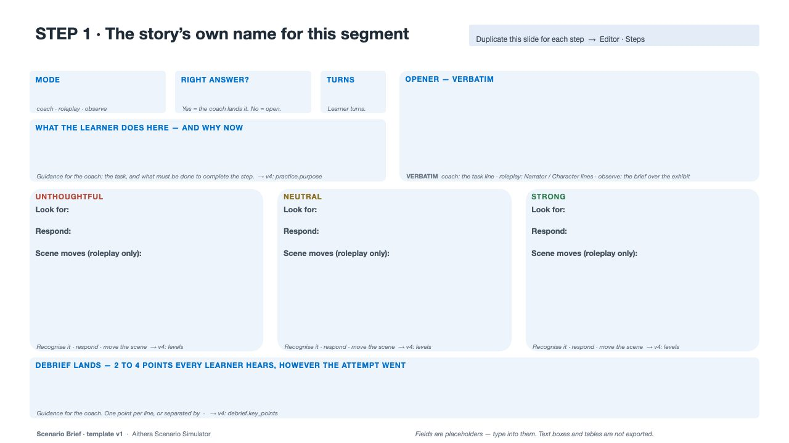
The label is the pre-filled first line of the placeholder — it is what Outline view exports, so it is also the key an importer reads. The machine key is written on the shape itself for a future .pptx importer that would not need labels at all.
| Slide · field label | Machine key | Wizard question today | v4 field it becomes |
|---|---|---|---|
| Cover · Scenario title | cover.title | Working title | title |
| Cover · Training it lives inside | cover.training | The training it lives inside | register only — no field |
| Cover · Owner / Version · date / Status | cover.* | — | not imported |
| THE BRIEF · Topic | brief.topic | What is this scenario about? | drives everything; no field of its own |
| THE BRIEF · The learner plays | brief.learner | Who does the learner play? | shapes narrative and every purpose |
| THE BRIEF · Steps, in order | brief.steps | The steps — one per line, mode-prefixed | phases[] order and practice.mode |
| THE BRIEF · Source slides or documents | brief.sources | — | traceability only |
| THE SITUATION · What's true as the scenario opens | situation.narrative | What's true as the scenario opens? | narrative — verbatim |
| THE SITUATION · Setting | situation.setting | Where does this take place? | scene_world.setting |
| THE SITUATION · Cast | situation.cast | Who else is in it? | scene_world.characters[] — name, role, driver, guardrails |
| THE TEACHING · Must-knows | teaching.mustknows | What must every learner walk away knowing? | teaching_points, and the close |
| THE TEACHING · Strong handling vs. weak | teaching.strongweak | Strong handling vs. weak | informs every step's levels |
| THE TEACHING · Common wrong answers → redirect | teaching.misconceptions | not asked today — the wizard drafts them | misconceptions[] |
| THE TEACHING · Coach voice | teaching.voice | How should the coach come across? | coach_persona + tone_guidelines |
| THE OPENING · Warm-up question | opening.question | a yes/no toggle today | opening.opening_messages — verbatim |
| THE OPENING · Turns | opening.turns | — | opening.exit.when.turns |
| THE OPENING · Listen for | opening.listen | — | opening.levels (calibration only) |
| STEP · title | slide title | — | phases[].label — the story's own name |
| STEP · Mode | step.mode | the step line's prefix | practice.mode |
| STEP · Right answer? | step.right | not asked today — the wizard decides | practice.answer_shape (Vector extension) |
| STEP · Turns | step.turns | — | practice.exit.when.turns |
| STEP · What the learner does here | step.does | the step line's description | practice.purpose + exit.when.requirement |
| STEP · Opener | step.opener | — | interaction.opening_messages (or brief for observe) — verbatim |
| STEP · Unthoughtful / Neutral / Strong | step.tier.* | — | levels.{tier}.look_for / .response / .progression |
| STEP · Debrief lands | step.debrief | — | debrief.key_points |
| EXAMPLES · Learner / Reply per tier | example.tier.* | — | levels.{tier}.example.learner / .reply |
| THE CLOSE · Ideal response components | close.components | — | closing.ideal_response.component_groups |
| THE CLOSE · Summary | close.summary | — | closing.ideal_response.summary — verbatim |
| THE CLOSE · External authorities | close.authorities | — | closing.ideal_response.source_references |
| THE CLOSE · Internal source slides | close.internal | — | never ships |
| SOURCE MATERIAL · Source text | source.text | Source material — paste anything | mined for specifics, never stored |
These v4 fields have no slot in the brief on purpose. The wizard writes them, the editor shows them, and a reviewer changes them there if they need changing: every id, button label and input placeholder; each practice's and debrief's model-facing purpose phrasing; the debrief's final_word and probe; the scene world's canon.facts; a character's baseline and emotion_hint; partner_label and help_turns. The dev conversation already established that several of these were being filled "to satisfy a schema slot, not SME-authored" — the brief simply stops asking humans to write them.
View → Outline → select all → copy gives text in exactly this shape: a slide title on its own line, then each field's label followed by its value lines. It is what the worked example exports for its first step:
STEP 1 · Does This Qualify as Harassment? MODE coach RIGHT ANSWER? Yes — the coach lands it plainly. TURNS 2 WHAT THE LEARNER DOES HERE — AND WHY NOW Reason through whether the conduct qualifies as sexual harassment under Title VII. … OPENER — VERBATIM “Based on what you know about workplace harassment — think through what Marshall is experiencing. …” UNTHOUGHTFUL Look for: Conflates harassment with explicit sexual advances or quid pro quo. … Respond: Clarify the two types of harassment. … Scene moves (roleplay only): NEUTRAL … DEBRIEF LANDS — 2 TO 4 POINTS EVERY LEARNER HEARS, HOWEVER THE ATTEMPT WENT There are two types of harassment … · Gender-stereotype conduct is … · The public images are …
Parsing rules, for whoever builds the importer:
SCENARIO BRIEF, THE BRIEF, THE SITUATION, THE TEACHING, THE OPENING, STEP N · <label>, STEP N · EXAMPLES, THE CLOSE, SOURCE MATERIAL. Anything else is ignored. A missing THE OPENING means no warm-up.Look for: / Respond: / Scene moves (roleplay only): (or Learner: / Reply: on an EXAMPLES slide). · . A step line splits on its first colon: mode, then description — the same rule the wizard's step field uses today, so coach:, roleplay:, observe: and their synonyms all resolve.studio-v2-v4-universal-wizard.js that recognises the labels above and pre-fills the interview fields directly, so the AI drafts only what the brief left blank and verbatim fields land untouched. No build step, no file parsing — just the labels. After that, a .pptx drop that reads placeholders by machine key would make the labels optional.
tools/build-scenario-brief.py turns one field list into both decks with python-pptx: nine custom slide layouts, each field a real body placeholder with a fixed index, a machine-readable shape name, a list style (so typed text inherits the right size and no bullets) and prompt text; panels and helper text live on the layout so they can't be edited or exported. tools/render-pptx-html.py draws any such deck to HTML for eyeballing — the previews above — because there is no Office here. The generator also sizes the worked example's text by arithmetic and reports any field near capacity, so a longer scenario that overflows a panel is a rebuild with shorter copy, not a mystery.